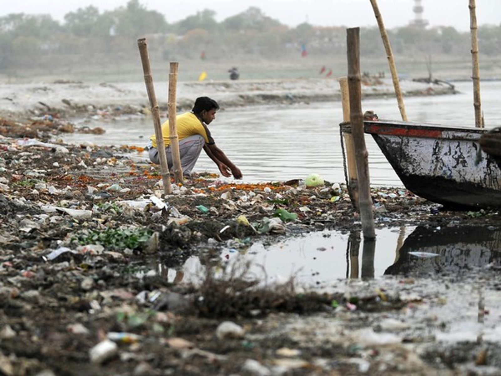
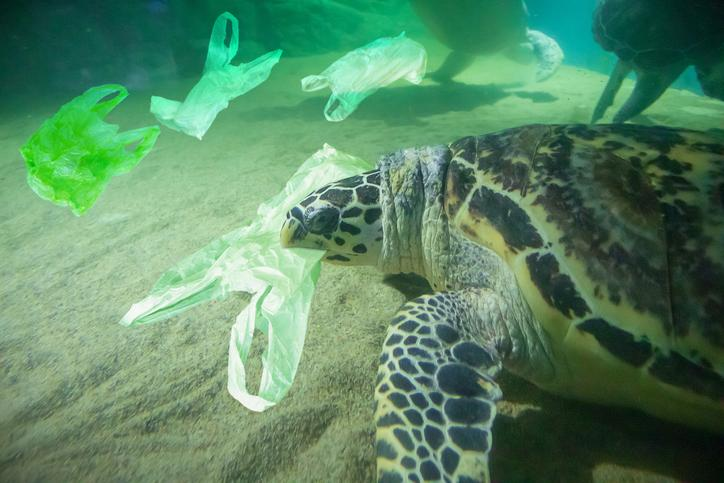

Se define como la acumulación de una o más sustancias ajenas al agua que pueden generar una gran cantidad de consecuencias, entre las que se incluye el desequilibrio en la vida de los seres vivos (animales, plantas y personas).
Causas
Vertido de contaminantes en el agua: estos pueden proceden de la producción industrial o incluso de los deshechos de basuras que generamos en nuestro día a día. Uno de los retos a los que nos enfrentamos en la actualidad es la contaminación por microplásticos. El calentamiento global altera el equilibrio de los océanos. Uno de los efectos de esto es la pérdida de oxigeno en el agua que pone en peligro la existencia de la biodiversidad. La deforestación es otra de las principales causas de la contaminación en el agua. Uno de los efectos más nocivos de la tala de arboles es aparición de sedimentos que tienen como fin el agua de os océanos y ríos provocando que su calidad sea perjudicial para el planeta. Aguas fecales: La Organización de Naciones Unidas alerto de que más del 80% de las aguas residuales llegan a mares y océanos están sin depurar. Tráfico marítimo: es otra de las principales causas de la contaminación por plásticos ya que la mayor parte de los residuos que se lanzan al mar proceden de barcos pesqueros o petroleros que provocan una contaminación muy nociva del agua. Los derrames de combustible también suponen una de las causas más comunes de contaminación en el agua. Además, el transporte y almacenamiento de petróleo puede provocar filtraciones que acaban en el mar.
Consecuencias
La contaminación del agua tiene efectos devastadores para la protección del medio ambiente y la salud del planeta. Algunas de las consecuencias más importantes de los diferentes tipos de contaminación en el agua son: la destrucción de la biodiversidad, la contaminación de la cadena alimentaria que supone la transmisión tóxica a los alimentos y la escasez del agua potable. 